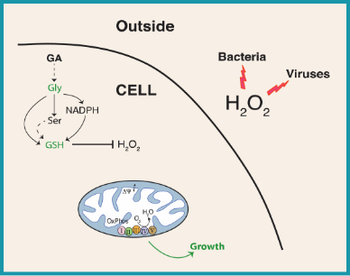

დრეზდენის (გერმანია) მაქს პლანკის უჯრედის მოლეკულური ბიოლოგიის და გენეტიკის ინსტიტუტის ლაბორატორიაში აღმოჩენილი იქნა გლიკოლატის და ასევე ამინომჟავა გლიცინის უნარი გაანეიტრალოს ძლიერი დამჟანგველების დესტრუქციული მოქმედება მიტოქონდრიაზე, შესაბამისად უჯრედზეც.
.png)
თეიმურაზ კურცხალია
დრეზდენის მაქს-პლანკის უჯრედის ბიოლოგიისა და გენეტიკის ინსტიტუტის პროფესორ-ემერიტუსი
ბანგალორის (ინდოეთი) ბიოლოგიურ მეცნიერებათა ნაციონალური სამეცნიერო ცენტრის პროფესორი.
თბილისის თავისუფალი უნივერსიტეტის საპატიო პროფესორი
გაიგე მეტი
კოვიდ-19-ის გამოწვევის საპასუხოდ ჩვენ შევქმენით სამეცნიერო აღმოჩენაზე დაფუძნებული ფორმულა, რომელიც უზრუნველყოფს სწრაფ და ეფექტურ დაცვას ვირუსებისგან.
GlyPerA™-ს მოქმედება დაფუძნებულია წყალბადის ზეჟანგის ძლიერ ანტიმიკრობულ თვისებებზე. ეს უკანასკნელი ფართოდ გამოიყენება კვების მრეწველობაში და მედიცინაში, როგორც ანტისეპტიური და სადეზინფექციო საშუალება.
მიუხედავად იმისა, რომ წყალბადის ზეჟანგი ზოგადად უსაფრთხო ნივთიერებებს მიეკუთვნება, GRAS-ებს (generally regarded as safe). სადეზინფექციოდ მისი ხშირი და/ან მაღალი კონცენტრაციით გამოყენება არ არის სასურველი, რადგან შეიძლება გამოიწვიოს უჯრედის ჟანგვითი სტრესი და მიტოქონდრიების დაზიანება.
რამოდენიმე წლის წინ მაქს პლანკის უჯრედის მოლეკულური ბიოლოგიის ინსტიტუტის ლაბორატორიაში, პროფესორ თეიმურაზ კურცხალიას ხელმძღვანელობით, აღმოჩენილი იქნა გლიკოლატის და ასევე ამინომჟავა გლიცინის უნარი გაანეიტრალოს ძლიერი დამჟანგველების დესტრუქციული მოქმედება მიტოქონდრიაზე.
ამ აღმოჩენის საფუძველზე შექმნილ GlyPerA™-ს ანტიმიკრობული ხსნარი უჯრედის გარეთ ეფექტურად ანადგურებს ვირუსებს და ბაქტერიებს, გლიცინი კი უჯრედის შიგნით აჩერებს ჟანგვით სტრესს და იცავს მიტოქონდრიას.
სწორედ ამიტომ, ჩვენს მიერ შემოთავაზებულ ხსნარს უნარი აქვს პრევენცია გაუწიოს ბაქტერიებით და ვირუსებით პირის ღრუსა და ხახის დაინფიცირებას, თუნდაც უმნიშვნელო უკუჩვენებების და გვერდითი მოვლენების გარეშე.
საინტერესოა, რომ GlyPerA™-ს ფორმულაციის შექმნა ემყარება თ. კურცხალიას ლაბორატორიის უკანასკნელი წლების მუშაობას კრიპტობიოზზე, ანუ “დამალული სიცოცხლის” ფენომენზე. გამშრალი და გაყინული ნემატოდა (მრგვალი ჭია) ათიათასობით წელი კრიპტობიოზში იმყოფება და შემდეგ ისევ უბრუნდება სიცოცხლეს. კრიპტობიოზში მყოფი ნემატოდა იცავს თავს ჟანგვითი სტრესისგან. ეს სწორედ გლიცინზე დაფუძნებული ის პრინციპია, რომელიც GlyPerA™-ში მოიხმარება.